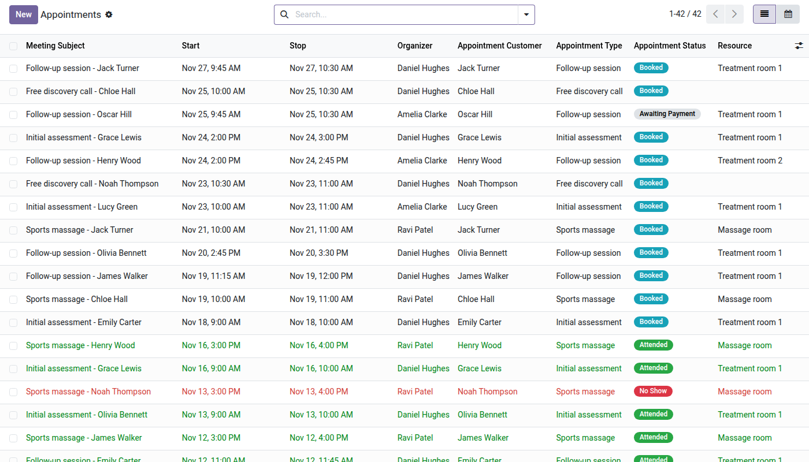
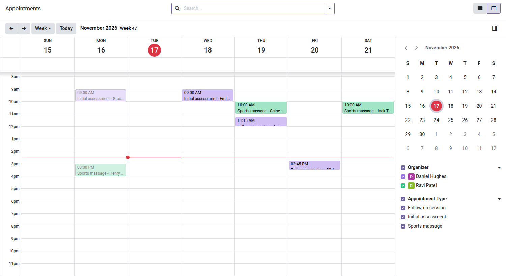
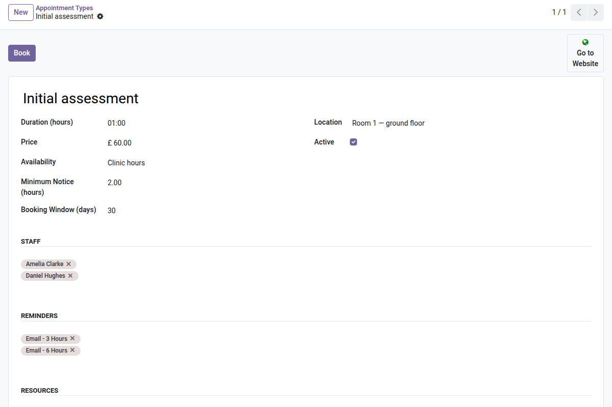
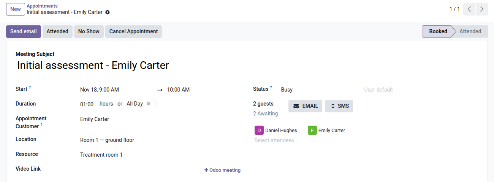
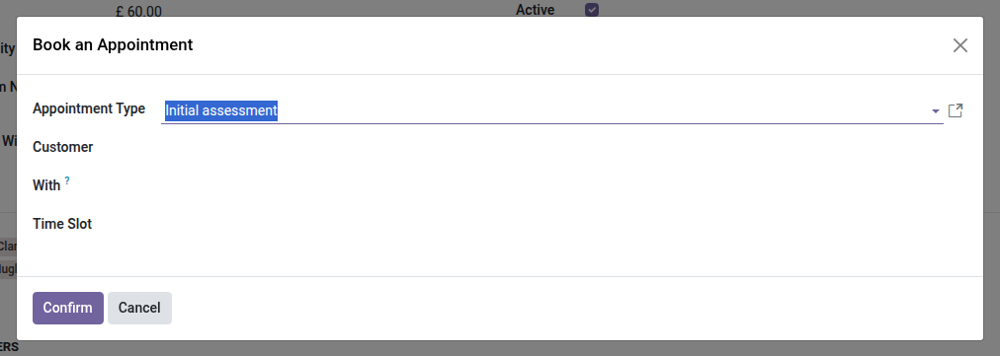

Appointments — Internal Booking
Manage your appointment types, compute free slots and book in a few clicks — without leaving Odoo Community.
Odoo Community ships with no appointment booking module. The result: every consultation, session or service call is entered by hand in the calendar, with no check on staff availability. Double bookings happen, confirmation emails are forgotten, and "Attended / No-show / Cancelled" tracking simply does not exist. Every team cobbles together its own solution in a spreadsheet or an external tool.
What it adds
- 📋 Configurable appointment types — set duration, authorized staff, hours (working schedule), minimum notice and booking horizon for each type of service.
- ⚡ Available slots computed automatically — the module cross-checks the working schedule and existing events to offer only truly free slots, per staff member.
- 🖱️ One-click booking from the form — a built-in wizard lets you select the customer, the slot and the staff member, then confirm the appointment without leaving Odoo.
- 📊 Appointment status tracking — each event carries a status (Booked, Attended, Cancelled, No-show) to steer your activity and filter calendars.
- ✉️ Automatic confirmation email — an email template is sent to the customer and the staff member for every new booking.
- 🗓️ Native Odoo Calendar integration — each appointment becomes a standard calendar event, visible in the calendar, with configurable reminders.
Real screenshots
1. Every appointment and its outcome
Booked, attended, no-show or cancelled: each appointment with its customer, staff member, type and room.

2. The whole team's week
One color per staff member, filters by staff and by appointment type.

3. Appointment types with their rules
Duration, opening hours, minimum notice, booking window, staff and reminders.

4. Attended, no-show or cancelled in one click
The appointment shows its customer and status; the outcome is set from the header and kept in the history.

5. Book from the back office
Pick the type, the customer and a free time slot: the staff member and the confirmation follow.

Why install it
- Structured appointment booking, otherwise reserved for Odoo Enterprise, available in Community — for free.
- No external dependency: everything stays in your existing Odoo (contacts, calendar, emails).
- Extensible base: add public online booking, payment at booking or resource management (rooms, equipment) with the suite's pro add-ons.
- Fits any kind of team: consulting firms, service centers, human resources, maintenance — whenever a staff member receives customers by time slot.
Part of the OdooSkills Appointment suite
This module is the open-source core. Extend it as needed:
- oski_appointment_website — public booking page on your Odoo website (your customers book on their own, 24/7).
- oski_appointment_payment — online payment at booking (deposit or full payment).
- oski_appointment_resource — management of physical resources (rooms, booths, equipment) with capacity and scheduling.
See the full suite on apps.odooskills.com.
📦 Need it all? The Appointments suite installs all four modules at once for $79 instead of $117.
License LGPL-3 (open source) — compatible with Odoo 19.0 Community. Support: apps@odooskills.com.